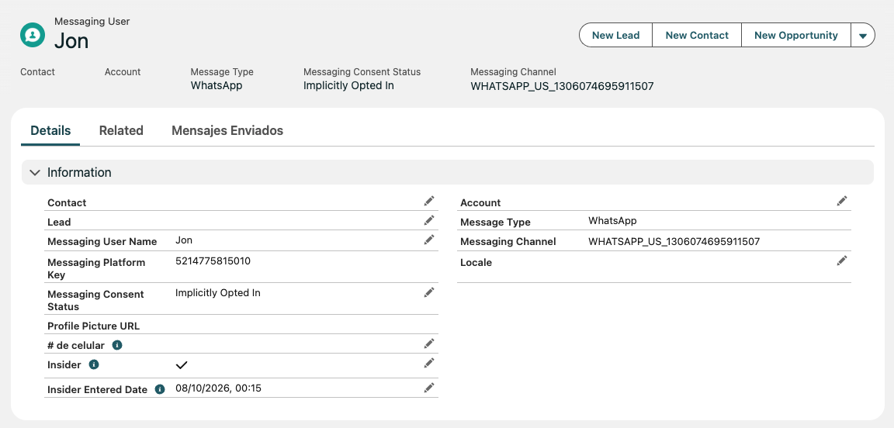
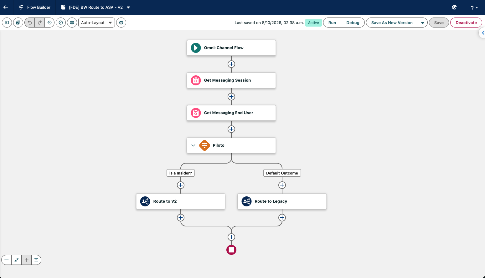

Cómo se incorpora el nuevo agente, cómo convive con el agente actual durante el piloto, y por qué el trabajo se está haciendo directamente en el ambiente de producción.
Jonathan Gomez
Salesforce · Forward Deployed Engineer
Salesforce · BetterwareNotificación · Octubre 2026
1 · Contexto
Trabajo excepcional sobre producción para acelerar la estabilización
Con el objetivo de acelerar la estabilización del servicio y la liberación del nuevo agente, hemos determinado trabajar de manera excepcional sobre el ambiente de producción. La decisión responde a tres factores operativos del proyecto.
1Prioridad operativa
Corregir las deficiencias de la implementación actual y habilitar una solución estable en el menor tiempo posible.
2Estado actual de los ambientes
Se han realizado ajustes directamente en producción, por lo que existen posibles diferencias de configuración respecto al Sandbox.
3Continuidad de la implementación
Trabajar sobre la configuración vigente permitirá reducir esfuerzos de sincronización y evitar retrasos adicionales.
La decisión es excepcional, acotada en alcance, y reversible.
Esta ruta no sustituye el ciclo recomendado de desarrollo en Sandbox. La aplicamos sólo para esta ventana de estabilización y con mecanismos de reversión en caso de necesitarlos.
Salesforce · BetterwareNotificación · Octubre 2026
2 · Estrategia de habilitación y transición
Dos agentes en paralelo, un grupo controlado de usuarios primero
Para una transición gradual y controlada entre ambos agentes, se contempla la siguiente estrategia operativa.
PASO 1
Identificación de usuarios
Se incorpora el campo FDE_Insider__c en el objeto MessagingEndUser para identificar a los usuarios que participarán en el programa Insiders — acceso adelantado al nuevo agente.
PASO 2
Enrutamiento condicionado
Al iniciar una nueva conversación de WhatsApp, el sistema consulta el campo. Los usuarios identificados como Insider son dirigidos al nuevo agente; el resto continúa con el agente Legacy.
PASO 3
Convivencia controlada
Ambos agentes operan temporalmente en paralelo. Esto permite validar el desempeño del nuevo agente con un grupo delimitado de usuarios antes de ampliar su cobertura.
PASO 4
Congelamiento del Legacy
No deberán incorporarse nuevas funcionalidades ni mejoras evolutivas sobre el agente Legacy. Las nuevas capacidades se desarrollan exclusivamente en el nuevo agente. Solo se contemplan correcciones críticas, previa evaluación y autorización.
La identificación del Insider sucede en un sólo campo del perfil del usuario.
En la siguiente página se muestra cómo luce ese campo en el registro de Salesforce. Marcar o desmarcar Insider mueve al usuario entre un agente y otro para su siguiente conversación.
Salesforce · BetterwareNotificación · Octubre 2026
2.1 · El campo Insider en el registro del usuario
Un check y una fecha · así se marca a un Insider
Cada usuario de WhatsApp tiene un registro en Salesforce. Para incorporarlo al piloto se activa el campo Insider; la fecha de incorporación se guarda automáticamente en Insider Entered Date.

Vista del registro de un usuario Insider en Salesforce — campo Insider activo y Insider Entered Date con la fecha de incorporación.
Reversible: desmarcar el campo devuelve inmediatamente al usuario al agente Legacy en su próxima conversación.
Trazable: la fecha de incorporación queda registrada, útil para analizar el comportamiento del piloto por cohortes de ingreso.
Operable por el equipo: la gestión se hace desde el registro del usuario, sin despliegues ni ajustes técnicos.
Salesforce · BetterwareNotificación · Octubre 2026
3 · Enrutamiento · cómo funciona
Un ruteo automático decide a qué agente llega cada conversación
Cuando entra una conversación nueva por WhatsApp, un flujo automático verifica si el usuario es Insider y lo deriva al agente correspondiente. Todo sucede antes de que llegue el primer mensaje a un agente.

Flujo FDE BW Route to ASA · V2 en Salesforce — se ejecuta automáticamente al llegar una nueva conversación.
Salesforce · BetterwareNotificación · Octubre 2026
3.1 · Enrutamiento paso a paso
Cinco pasos del ruteo, en lenguaje de negocio
Esto es lo que sucede desde que entra el mensaje hasta que llega al agente correcto. Todo se ejecuta de forma automática, en segundos.
1
Entra una conversación nueva
El flujo se dispara cuando un distribuidor escribe por WhatsApp. En este primer paso aún no hay ningún agente asignado.
2
Se identifica al usuario
El sistema localiza al distribuidor que está escribiendo buscando su registro de usuario. Es un paso silencioso para el usuario — sucede en segundos.
3
Pregunta clave · "¿es Insider?"
El flujo consulta en el perfil del usuario si está marcado como Insider. Es la decisión central: dependiendo de la respuesta toma uno u otro camino.
4
Si es Insider · Route to V2
La conversación se envía al nuevo agente. El usuario Insider recibe la nueva experiencia desde su primer mensaje.
5
Si no es Insider · Route to Legacy
La conversación continúa con el agente actual, sin cambios. El resto de distribuidores sigue viendo exactamente lo mismo que hoy.
Agregar a alguien al piloto es un sólo clic.
Marcar o desmarcar el campo Insider en el registro del usuario lo mueve inmediatamente entre un agente y otro para su siguiente conversación. Esto permite ampliar el grupo de piloto gradualmente — o revertir a alguien si fuera necesario.
Salesforce · BetterwareNotificación · Octubre 2026
4 · Consideraciones y siguientes pasos
Mitigaciones, criterios y recomendación para alinear ambientes
La decisión responde exclusivamente a las condiciones particulares del proyecto y no constituye una práctica recomendada. El enfoque recomendado continúa siendo realizar el desarrollo y las pruebas en Sandbox antes de desplegar cualquier cambio en producción.
Mitigaciones activas durante esta ventana
Mantendremos un alcance controlado, realizaremos las validaciones correspondientes antes de habilitar el nuevo agente para cada grupo de usuarios, y tendremos mecanismos de reversión listos ante cualquier eventualidad.
Criterios para operar en esta modalidad
Alcance acotado al piloto Insiders: cualquier cambio en producción se limita a lo necesario para habilitar y estabilizar el nuevo agente.
Validación antes de ampliar: cada incorporación de usuarios al piloto se valida con pruebas específicas y revisión del comportamiento del nuevo agente.
Reversibilidad: desmarcar el campo Insider devuelve al usuario al agente Legacy sin impacto para él.
Congelamiento del Legacy: no se incorporan nuevas funcionalidades. Solo correcciones críticas, previa autorización.
Recomendación · refresh de Sandbox al cierre
Una vez concluida y estabilizada la implementación, recomendamos realizar un refresh del Sandbox, previa revisión y respaldo de cualquier desarrollo existente.
Esto permitirá restablecer la alineación entre ambientes y retomar el ciclo recomendado de desarrollo → pruebas → despliegue para futuras modificaciones.
Esta es una ventana excepcional, no la nueva forma de trabajar.
Al terminar la estabilización volvemos al flujo estándar: Sandbox primero, producción después, con la trazabilidad y validación habituales.